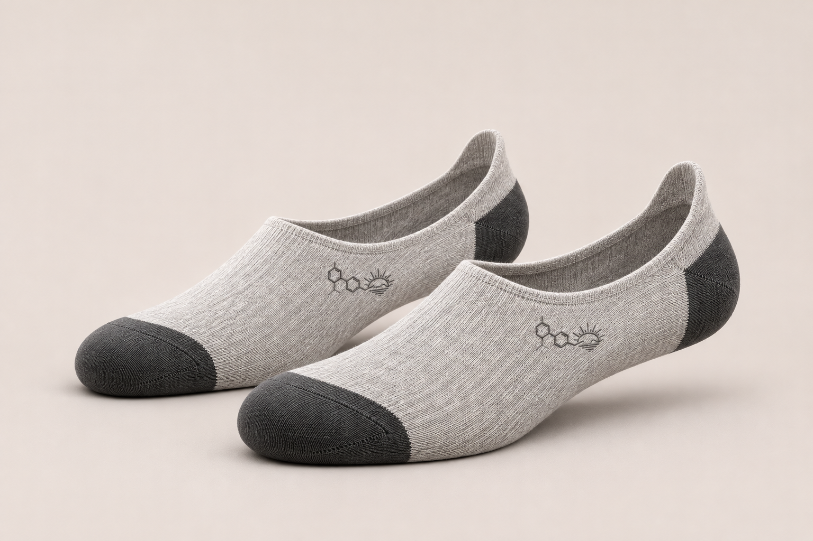

SOCKS / 05 / NSE STUDIO
Low Profile No-show
The quietest expression of the uniform.
DESIGN CONCEPT · NOT FOR SALE- FORM
- No-show length
- COLOR
- Heather grey / charcoal
- MATERIAL
- Fine-gauge knit direction
The image shows a design direction. Final fit, fiber composition, sizes and availability require sampling and confirmation.